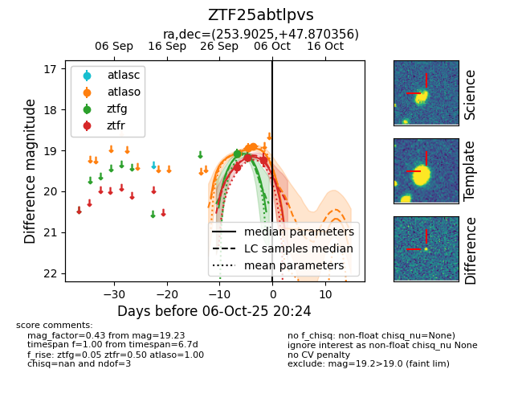
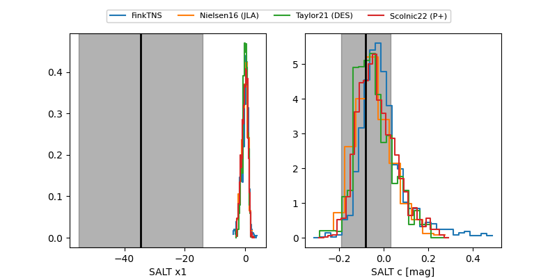

FINK: ZTF25abtlpvs
Lasair: ZTF25abtlpvs
ALeRCE: ZTF25abtlpvs
ZTF25abtlpvs (ztf,fink)
equatorial (ra, dec) = (253.9025,+47.87036)
galactic (l, b) = (74.0276,+38.84507)


last atlaso=18.91, ztfg=19.17, ztfr=19.23
3 atlaso, 2 ztfg, 3 ztfr detections